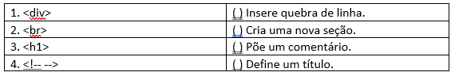

Exercícios Tema 3 -
(IBADE/2022 - Adaptada) Você foi selecionado pelo seu gestor para trabalhar em um novo projeto de formulários em páginas Web. Sobre uma página HTML, assinale a alternativa que indica para que é utilizada a tag abaixo.
<select></select>
(OBJETIVA/2021 - Adaptada) HTML é uma linguagem de marcação que faz uso de tags para estruturar o seu conteúdo. Em uma página HTML, para que é utilizada a tag abaixo?
(IDECAN/2022 - Adaptada) HyperText Markup Language (HTML) é uma linguagem que nos permite criar conteúdo na web que pode ser renderizado por navegadores como o Google Chrome, Microsoft Edge e o Safari. A respeito dessa linguagem, analise as afirmativas abaixo e marque a alternativa correta.
I. Documentos HTML são formados por marcadores (tags) que são delimitados pelos caracteres "". Além dos marcadores, temos nos documentos HTML os elementos. Eles são formados pelos marcadores que podem possuir atributos, valores e elementos filhos.
II. Os marcadores em HTML são case sensitive.
III. Em sua versão 5, o HTML trouxe uma série de novos marcadores para elementos.
São exemplos destes novos marcadores: , , e
(FGV/2022) Observe o código HTML e JavaScript a seguir:
const tjProcesso = {
ID:"2022.1",
envolvidos: [ "João", "Maria" ]
};
document.getElementById( "Tejota" ).innerHTML = tjProcesso.envolvidos[0];
(UFMT/2022) A coluna da esquerda apresenta elementos presentes no HTML5 e a da direita, a característica de cada um. Numere a coluna da direita de acordo com a da esquerda.

(UFMT/2021 - Adaptada) O HyperText Markup Language (HTML) é usado para estruturar páginas web. A respeito de HTML, marque V para as afirmativas verdadeiras e F para as falsas.
( ) É uma linguagem de programação.
( ) Substitui o uso de código JavaScript.
( ) Utiliza tags para delimitar conteúdo.
( ) Possui diferentes níveis de título.
Assinale a sequência correta.
(FURB/2022) Considere um código HTML 5, o qual está sendo estilizado utilizando CSS 3. Isso posto, você precisa modificar certa propriedade de um grupo de elementos para torná-los animados. Ao encontro disso, do(s) seletor(es) CSS a seguir listado(s), aquele(s) utilizado(s) para especificar um grupo de elementos é/são:
(OBJETIVA/2021 - Adaptada) O objetivo principal de uma linguagem de marcação de hipertexto é o de estruturar o conteúdo de um documento. O trecho HTML a seguir corresponde a:
ul
li Café
li Chá
li Leite
/ul
(FGV/2021) Analise o trecho HTML a seguir.
table
tr th A /th th C /th /tr
tr th B /th th D /th /tr
/table
(OBJETIVA/2021) Conforme Bonatti, sobre tecnologias e linguagens utilizadas na construção de websites, numere a 2ª coluna de acordo com a 1ª e, após, assinale a alternativa que apresenta a sequência correta: (1) CSS. (2) PHP. (3) HTML. ( ) É uma linguagem de programação open source, que é interpretada pelo servidor, muito utilizada para o desenvolvimento de aplicações voltadas para a internet. ( ) Serve para promover o acabamento visual das páginas web. Pode ser compartilhado entre várias páginas, permitindo, assim, uma padronização visual muito simplificada e lógica. ( ) É uma linguagem de marcação, que é interpretada pelo browser para dar formatação e posicionamento ao conteúdo do website.